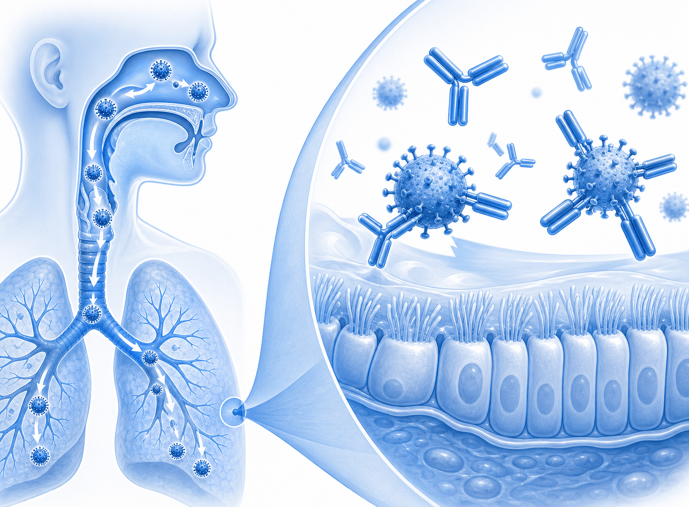
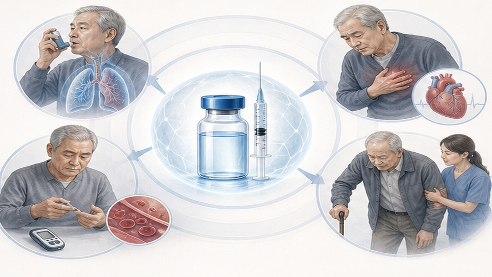
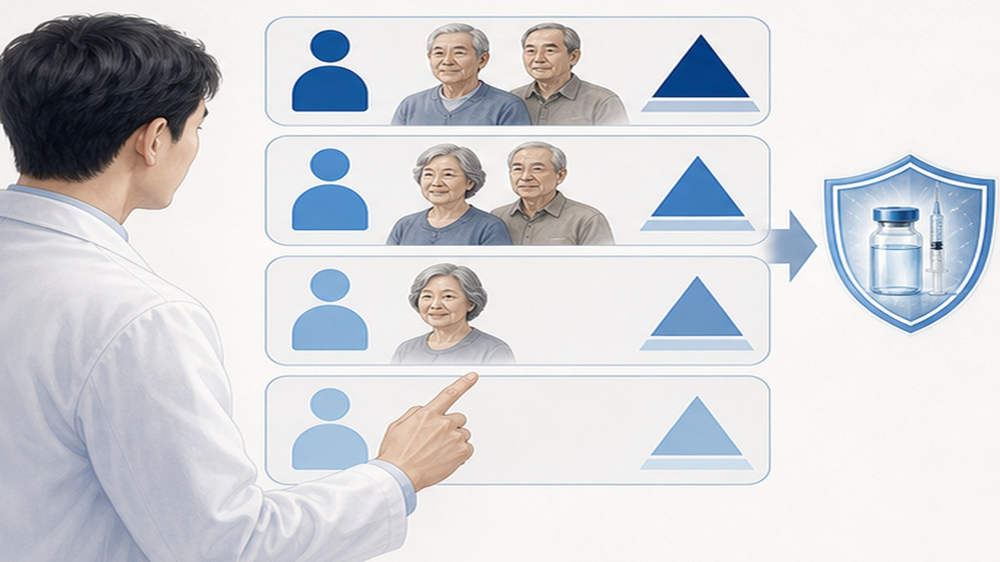

RSV 백신,
실사용 데이터로 가이드 재정비
JAMA Internal Medicine 2026.05 — 60세+ 성인 RSV 백신 real-world 효과·이상반응·고위험군 분석. 임상시험 효과(80-90%) vs 실사용(60-80%) 격차 + 가이드 보강.
한 문단·세 숫자로 요약
실사용 효과는 RCT보다 약간 낮지만 일관 유지 — 고위험군 우선 권고 강화
RCT 80–90% 대비 격차 있음
(입원·중증 위험 가장 큼)
(백만 명 당, 매우 드묾)
왜 60세+ RSV 백신이 중요한가
RSV는 영유아 질환으로 인식되지만 노인 RSV 입원·사망 부담 큼 — 인플루엔자 다음

노인 RSV 부담
- 매년 노인 RSV 입원 — 미국 60–160k명 · 한국 추정 1–3만 명
- 노인 RSV 사망 — 미국 6–10k명/년 · 인플루엔자 사망과 유사 수준
- 입원 시 중증화 — 30-50% 폐렴·ICU·호흡부전 진행
- 만성질환자 위험 ↑ — COPD·천식·심부전·당뇨·면역저하 시 2-5배
- 장기요양시설 outbreak — 군집 감염 흔함, 사망률 10-15%
- 3종 백신 승인 — Arexvy(GSK)·Abrysvo(Pfizer)·mRESVIA(Moderna mRNA)
JAMA Internal Med — Real-world Cohort + Case-Control
미국·EU 다국 데이터 통합. 60세+ 접종군 vs 미접종군 비교. 효과·이상반응·고위험군 정의 재평가.
효과 — RCT vs Real-world 격차
RCT 효과 80-90% → 실사용 60-80%. 입원 예방은 견고, 외래 감염은 변동성 큼.
안전성 — RCT와 동일, 길랑-바레 매우 드묾
국소·전신 반응 흔하나 일시적. 길랑-바레 신호 약함 — 통계적 유의 X, 모니터 지속.
우선 접종 강화 — 4가지 고위험군
75세+·만성 심폐질환·면역저하·장기요양시설 거주자. Real-world 데이터로 보강된 우선순위.
👴 75세 이상
RSV 입원·중증화 위험 가장 큼. 60–74세 대비 2-3배. 강한 권고, 적극 상담 + 비용 안내.
🫁 만성 심폐질환
COPD·천식 (중등도+)·심부전·관상동맥질환. RSV 진행 시 악화·입원 위험 ↑. 가을 전 접종.
🩺 면역저하
장기이식·항암 치료·고용량 스테로이드·HIV·자가면역약. 백신 효과 다소 ↓이지만 이득 큼.
🏥 장기요양시설 거주
군집 outbreak 위험 + 기저질환 동반. 시설 단위 접종 적극 권고. 사망률 10-15%.

한국 도입 현황 + 비급여 비용
Arexvy·Abrysvo 일부 시행 · mRESVIA 도입 진행 · 비급여 ₩20–30만 · 식약처 승인 후
🇰🇷 한국 도입 현황
- Arexvy (GSK) — 2024년 식약처 승인, 일부 의원·종합병원 시행
- Abrysvo (Pfizer) — 2024년 승인, 시행 확대 중
- mRESVIA (Moderna mRNA) — 2025년 미국 승인, 한국 도입 진행
- 비급여 — 1회 접종 ₩20–30만 (의원 가격 변동)
- 국가예방접종(NIP) 미포함 — 현재 자비 부담. 2026-2027 NIP 검토 진행
- 대상 연령 — 60세+ 권고 (CDC·식약처 기준), 일부 50세+ 검토
권고 강도별 분류 — 4단계
강한 권고·권고·환자 선호 기반·비용 안내 — 각 단계별 상담 메시지 다름

가을 시즌 환자 상담 4단계
9–10월 인플루엔자·폐렴구균 접종과 함께 RSV 백신 안내. 환자 결정 존중.
연령·기저질환·면역저하 확인. 75세+ 또는 만성 심폐질환 강력 권고. 일반 건강 60-74세는 권고.
"실사용 입원 예방 60-80%". 이상반응 1-2일 일시적. 길랑-바레 매우 드묾. 비용 ₩20-30만.
RSV 시즌 (11–3월) 전 접종. 효과 발현 2-4주. 인플루엔자·폐렴구균과 동시 접종 가능.
접종 후 15분 관찰 (아나필락시스). 1-2일 통증·피로 안내. 6주 내 신경증상(저림·약화) 시 의료기관.
한계와 주의사항 8가지
관찰연구 한계 + 한국인 데이터 부족 + 장기 효과·부스터 미확정
1차 진료 Take-home — 4가지 핵심
가을 RSV 시즌 환자 상담 즉시 반영 가능한 임상 요약